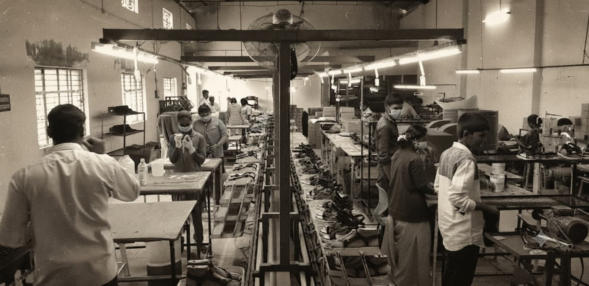

OUR JOURNEY
Our History
From a vision in 2015 to a growing global manufacturing partner.
THE SAAF STORY
A journey built on quality and trust.
SAAF Leather Products has its roots in Ambur, Tamil Nadu, a region with a strong connection to the leather industry. Our journey began with a simple vision: to build a dependable leather manufacturing company capable of serving customers in global markets.
THE BEGINNING
Where it all started
SAAF Leather Products was founded in 2015 by Aafaque Mohammed K and Sadeed Ahmed M.
The company was established with a vision to develop a trusted leather manufacturing business focused on quality craftsmanship and customer satisfaction.
A NEW CHAPTER
Strengthening the team
In 2018, Mohammed Taukhir M joined SAAF Leather Products.
His addition marked an important stage in the company's development and strengthened the team as SAAF continued to pursue growth.
THE JOURNEY CONTINUES
Growing for global markets
Today, SAAF Leather Products manufactures ladies' footwear, leather bags, belts, gloves and leather apparel.
Our products are mainly manufactured for customers across Australia, Europe and the United States.

LOOKING AHEAD
Building the next chapter of our story.
We continue to invest in our capabilities, people and manufacturing processes as we work toward becoming an even stronger partner for global customers.